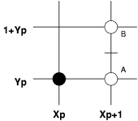
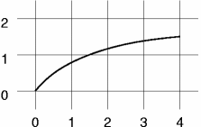
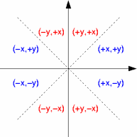
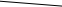
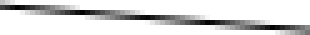
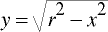
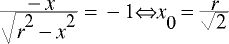
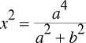

| Autor: | Wojciech Muła |
|---|---|
| Dodany: | 4.10.2002 |
| Aktualizacja: | 4.02.2007 |
Contents
Algorytm z punktem środkowym zaproponowany przez Bresenhama służy do rasteryzacji krzywych 2D, czyli jak najlepszego przybliżania matematycznych krzywych na siatce pikseli. Jego implementacja jest bardzo prosta i jednocześnie efektywna. Algorytm może działać zarówno na liczbach zmiennoprzecinkowych jak i całkowitych, ale ze względów praktycznych wykorzystuje się najczęściej realizacje całkowitoliczbowe. Siła algorytmu tkwi w jego prostocie, bowiem w głównej pętli algorytmu wykorzystywane są zaledwie dwie operacje: porównania i dodawania.
W tym artykule zostaną przedstawione procedury całkowitoliczbowe rasteryzujące odcinek, okrąg oraz elipsę. Z moich obserwacji przeprowadzonych przy użyciu Googli wynika, iż większość materiałów dotyczy rysowania odcinków oraz okręgów, natomiast rysowanie elipsy jest pomijane.
Przykładowe programy zostały napisane w Pythonie jedynie ze względu na klarowność kodu — uważam, że nawet osoba nie znająca tego języka z łatwością rozszyfruje kod. Swoją drogą, jeśli jeszcze nie znasz Pythona koniecznie odwiedź http://www.python.org lub http://www.python.org.pl; to bardzo miły język, warto się z nim zapoznać.
Rysunki wektorowe zostały wykonane w programie XFig, ostateczna obróbka w programie GIMP.
Prościutkie demonstracje wykorzystują element canvas (patrz Wikipedia), który jest obsługiwany przez część nowszych przeglądarek.
Rysowanie:
Algorytm można stosować dla krzywych (lub ich fragmentów), które spełniają
Teoretycznie można zaprogramować procedury rasteryzujące krzywe nie spełniające owych reguł, ale nie będą już tak efektywne — moc algorytmu Bresenhama wynika właśnie z tych ograniczeń!
Algorytm wymaga by krzywą opisywała funkcja uwikłana postaci f(x, y) = 0 — dla punktu znajdującego się na krzywej funkcja ma wartość zero, w przeciwnym razie wartość różną od zera; np. wartości dobrze znanej funkcji opisującej okrąg mają znak plus dla punktów wewnątrz okręgu, natomiast minus dla punktów leżących poza okręgiem.
Proszę zwrócić uwagę na fakt, iż użycie postaci uwikłanej jest jak najbardziej korzystne, bowiem nie ogranicza kształtu krzywych, jak to ma miejsce w przypadku funkcji odwzorowujących R → R (y = f(x)).
Załóżmy, że krzywa w przedziale [xp, xk] spełnia powyższe założenia.
Algorytm zaczyna więc swoje działanie od punktu (xp, yp) i stawiany jest piksel o tych współrzędnych (zaczerniony okrąg). Następnie współrzędna x jest zwiększa o 1, czyli kolejny piksel ma współrzędna x = xp + 1.
Teraz pozostaje wybrać współrzędną y — dzięki pierwszemu warunkowi wybór ten ogranicza się na piksele A i B i determinuje go punkt przecięcia krzywej z linią pionową xp + 1. Jeśli punkt ten jest bliżej punktu A to oczywiście wybierany jest punkt A, punkt B w przeciwnym razie — problem, to jednoznaczne określenie bliżej którego piksela jest ów punkt.
Bezpośrednie liczenie odległości może być dobrym rozwiązaniem podczas implementacji antyaliasingu, tu jednak jest nie do przyjęcia. Na rysunku krótką, poziomą kreską zaznaczony został punkt środkowy (o współrzędnej (xp + 1, yp + 0.5)), który rozgranicza piksele A i B. Jeśli punkt środkowy znajduje się powyżej punktu przecięcia, to wybierany zostaje punkt A, w przeciwnym razie punkt B.
Do stwierdzenia tego faktu wykorzystamy, wspomnianą już, cechę funkcji uwikłanej. Załóżmy, że f(x, y) > 0 dla punktów powyżej krzywej --- jeśli więc wartość funkcji w punkcie środkowym f(xp + 1, yp + 0.5) jest mniejsza od zera, to wybrany zostanie punkt A, w przeciwnym razie punkt B.
def bresenham_algo(xp, yp, xk):
y = yp
for x in range(xp, xk):
putpixel(x, y)
d = f(x+1, y+0.5) # wartość w punkcie środkowym
if d < 0:
y += 1 # wybieramy punkt B
else:
pass # wybieramy punkt A

Animacja demonstrująca działanie funkcji bresenham_algo.
Ponieważ współrzędne x i y zmieniają się o znane kroki, więc wartość funkcji w następnym kroku można przewidzieć. Wartość funkcji w punkcie (xp, yp) wynosi
dp = f(xp + 1, yp + 0.5)
w punkcie A
dA = f(xp + 2, yp + 0.5)
natomiast w punkcie B
dB = f(xp + 2, yp + 1.5)
Tak więc przy wyborze punktu A wartość funkcji zmieni się o deltaA = dA − dp, po wybraniu punku B o deltaB = dB − dp. Różnice te są nazywane różnicami pierwszego rzędu. Jeśli nie są stałe, a więc zależą od współrzędnych, to można policzyć odpowiednie przyrosty również dla nich — te przyrosty nazywają się różnicami drugiego rzędu.
def bresenham_algo2(xp, yp, xk):
y = yp
d = f(xp+1, yp+0.5) # wartość początkowa
for x in range(xp, xk):
putpixel(x, y)
if d < 0: # wybieramy punkt B
d += f(x+2, y+1.5)-f(x+1, y+0.5)
y += 1
else: # wybieramy punkt A
d += f(x+2, y+0.5)-f(x+1, y+0.5)
Zmienna d nazywana jest zmienną decyzyjną.
Załóżmy na początek, że odcinek ma nachylanie z przedziału 0-45 stopni, oraz że jeden z jego końców znajduje się w początku układu współrzędnych, natomiast drugi ma współrzędne (dx, dy). Równanie opisujące prostą ma postać
f(x, y) = ax + by + c
gdzie [a, b] jest wektorem normalnym; możemy go otrzymać poprzez obrót wektora [dx, dy] o 90 stopni, więc a = dy, b = − dx. Czynnik wolny c jest równy 0, ponieważ f(0, 0) = c i f(0, 0) = 0.
Wartości funkcji są dodatnie dla punktów znajdujących się poniżej odcinka.
Jak widać poniżej, różnice pierwszego rzędu zależą wyłącznie od współrzędnych końców odcinka.
Wartość początkowa d jest równa (0 + 1, 0 + 0.5) = dy − 0.5 ⋅ dx. Pojawiła się niestety wartość ułamkowa, ale ponieważ interesuje nas wyłącznie znak funkcji (znak zmiennej decyzyjnej) nic nie stoi na przeszkodzie by pomnożyć ją przez 2. Zwracam uwagę, że to pociągnie za sobą przemnożenie przyrostów, co zostało uwzględnione w poniższej funkcji.
def simple_line(dx, dy):
d = 2*dy - dx
delta_A = 2*dy
delta_B = 2*dy - 2*dx
y = 0
for x in range(dx):
putpixel(x, y)
if d > 0:
d += delta_B
y += 1
else:
d += delta_A

Narysowanie odcinka o innych nachyleniach wymaga zamiany współrzędnych zgodnie z rysunkiem powyżej. Nie jest to zbyt kłopotliwe — na rysunku kolorem niebieskim zaznaczono te oktanty w których moduł nachylenia odcinka jest z przedziału 0-45 stopni. Do rasteryzacji tych odcinków można z powodzeniem użyć funkcji simple_line, należy jedynie operować na modułach dx i dy i uzależnić przyrosty x i y od znaku, odpowiednio dx i dy. Natomiast W przypadku oktantów oznaczonych czerwonych należy wymienić x z y — podkreślam, że robi się to przed obliczeniem dx, dy.
Uwzględnienie dowolnych odcinków jest bardzo proste, wystarczy stawiać piksele o odpowiednio przesuniętych współrzędnych. Wszystko to zostało zebrane w kodzie poniżej.
def line(x0,y0, x1,y1):
dx = x1-x0
dy = y1-y0
def sign(x):
if x >= 0: return +1
else: return -1
inc_x = sign(dx) # uwzględnienie znaków dx
inc_y = sign(dy) # i dy
dx = abs(dx) # teraz odcinek został "przeniesiony"
dy = abs(dy) # do właściwego oktantu
if dx >= dy: # dy/dx <= 1 -- odcinek leży w "niebieskim" oktancie
d = 2*dy - dx
delta_A = 2*dy
delta_B = 2*dy - 2*dx
x, y = (0, 0)
for i in range(dx+1):
putpixel(x0+x, y0+y, 0)
if d > 0:
d += delta_B
x += inc_x
y += inc_y
else:
d += delta_A
x += inc_x
else: # dy/dx > 1 -- odcinek leży w "czerwonym" oktancie
# proszę zwrócić uwagę na wspomnianą zamianę znaczenia
# zmiennych
d = 2*dx - dy
delta_A = 2*dx
delta_B = 2*dx - 2*dy
x, y = (0, 0)
for i in range(dy+1):
putpixel(x0+x, y0+y, 0)
if d > 0:
d += delta_B
x += inc_x
y += inc_y
else:
d += delta_A
y += inc_y
Dwukrotne przyspieszenie można uzyskać rozpoczynając rasteryzację równocześnie z dwóch końców odcinka — moduły przyrostów nie zależą od kolejności w jakiej poda się punkty końcowe odcinka. Należy jedynie uzupełnić jeden piksel na środku odcinka.
def simple_line_faster(x0,y0, x1,y1):
dx, dy = x1-x0, y1-y0
d = 2*dy - dx
delta_A = 2*dy
delta_B = 2*dy - 2*dx
y = 0
dx2 = (dx+1)/2 # uwaga! zaokrąglenie
for x in range(dx2):
putpixel(x0+x, y0+y, 0)
putpixel(x1-x, y1-y, 0)
if d > 0:
d += delta_B
y += 1
else:
d += delta_A
if dx % 2 == 0:
putpixel(x0+dx2, y0+y, 0)
Alternatywnym, dla algorytmu Bresenhama, jest algorytm rekursywny; jego kod bardzo prosty i krótki, oczywiście odcinek jest rasteryzowany prawidłowo.
def line_recursive(x0, y0, x1, y1):
if x0 == x1 and y0 == y1:
return
x = (x0+x1)/2 # albo (x0+x1) >> 2
y = (y0+y1)/2
putpixel(x, y)
line_recursive(x0,y0, x,y)
line_recursive(x1,y1, x,y)
Kod w asemblerze jest nie mniej przejrzysty, a po kompilacji ma zaledwie 46 bajtów.
line_recursive:
pop edx ; edx = y1
pop ecx ; ecx = x1
pop ebx ; ebx = y0
pop eax ; eax = x0
cmp edx, ebx ; y1==y0
jne .1
cmp eax, ecx ; x1==x0
je .2
.1:
lea esi, [eax+ecx]
lea edi, [ebx+edx]
shr esi, 1 ; esi = x
shr edi, 1 ; edi = y
call putpixel
; ramka stosu dla wywołania (x0,y0, x,y)
push eax
push ebx
push esi
push edi
; ramka stosu dla wywołania (x1,y1, x,y)
push ecx
push edx
push esi
push edi
call line_recursive ; (x1,y1, x,y)
call line_recursive ; (x0,y0, x,y)
.2:
ret
Podczas rysowanie odcinka jedna ze współrzędnych jest znana i ma wartość całkowitą, natomiast druga jest liczbą rzeczywistą. Powiedzmy, że piksel ma współrzędną (x, y.u), wtedy współczynnik pokrycia piksela (x, y) wynosi 1 − u, natomiast piksela (x, y + 1) współczynnik ten wynosi u.
Podczas obliczeń stałoprzecinkowych najlepiej przyjąć 8 bitów na część ułamkową, składowe kolorów mają maksymalnie 8 bitów, więc większa dokładność nie jest potrzebna.
def aa_line(x0,y0, x1,y1):
dx = x1 - x0
dy = y1 - y0
dydx = (256*dy)/dx # przyrost y-ka (fixed point)
y = 0
for x in range(dx):
c = y & 255 # kolor piksela to 8 najmłodszych bitów
i = y >> 8
putpixel(x0+x, y0+i, c)
putpixel(x0+x, y0+i+1, 255-c)
y += dydx
Oto przykładowy wynik działania powyższej funkcji (rozmiar oryginalny po lewej, po prawej powiększenie).
 Podczas rasteryzacji okręgu wykorzystana zostanie jego ośmiokrotna symetria; rasteryzacji zostanie poddany zaznaczony na niebiesko oktant (który spełnia warunki nakładane przez algorytm Bresenhama), piksele z pozostałych oktantów uzyskane zostaną przez odbicia symetryczne.
Pętla algorytmu będzie wykonywać się na współrzędnej x; punktem początkowym będzie „szczyt” okręgu o współrzędnych (0, r). Punktem końcowym będzie ten w którym nachylanie stycznej przekroczy − 1. Jak wiadomo funkcja jednej zmiennej opisująca połówkę okręgu ma postać
wobec czego końcowa wartość współrzędnej x wyniesie
Proszę się nie obawiać, nie ma potrzeby dzielenia przez pierwiastek z dwóch, a to dlatego, że f(x0) = x0, więc współrzędna x będzie rosnąć od zera, a y maleć od r do chwili, aż zrówna się z x.
Możemy teraz przystąpić do obliczeń przyrostów; dla formalności przypomnę równanie uwikłane dla okręgu (przyjmuje ono wartości ujemne dla punktów z wnętrza okręgu)
f(x, y) = x2 + y2 − r2
Wartość początkowa d wynosi f(0 + 1, r − 0.5) = − r + 1.25 i tak jak w przypadku linii pojawiła się wartość ułamkowa. Rozwiązanie jest podobne — przemnożenie d przez 4. Pamiętając, że y maleje, obliczamy różnice pierwszego rzędu:
Jak widać zależą one od chwilowych wartości współrzędnych x i y. Zostaną więc policzone różnice drugiego rzędu.
Wartości początkowe w punkcie (0, r) — bez przesunięcia o wektor [1, 0.5] — wynoszą:
Przy wyborze punktu A wzrasta wyłącznie współrzędna x, więc:
natomiast po wybraniu B maleje dodatkowo y:
Jak widać przyrosty drugiego rzędu już nie zależą od x ani y.
Przypominam, że d zostanie przemnożone przez 4.
def circle(x0, y0, r):
def circle_points(x,y): # funkcja odbija symetrycznie punkt
putpixel(x0-x, y0-y)
putpixel(x0-x, y0+y)
putpixel(x0+x, y0-y)
putpixel(x0+x, y0+y)
putpixel(x0-y, y0-x)
putpixel(x0-y, y0+x)
putpixel(x0+y, y0-x)
putpixel(x0+y, y0+x)
d = 5.0-4*r
x = 0
y = r
deltaA = (-2*r+5)*4
deltaB = 3*4
while (x <= y):
circle_points(int(x), int(y))
if d > 0:
d += deltaA
y -= 1
x += 1
deltaA += 4*4
deltaB += 2*4
else:
d += deltaB
x += 1
deltaA += 2*4
deltaB += 2*4
Podczas rasteryzacji elipsy wykorzystamy jej czterokrotną symetrię, jednakże przetwarzane będą dwie części elipsy, zaznaczone na niebiesko i czerwono. Zostanie pokazana procedura rasteryzująca część elipsy zaznaczoną na niebiesko; aby przetworzyć część czerwoną wystarczy wymienić a z b (półosie elipsy) i ponownie wywołać procedurę.
W zasadzie sytuacja jest podobna jak dla okręgu — tu również zaczynamy od „wierzchołka” elipsy o współrzędnych (0, b), również punktem końcowym będzie punkt w którym nachylenia przekracza − 1. Oczywiście przyrównujemy pochodną funkcji jednej zmiennej — pominę wzory i obliczenia, bowiem są bardzo proste; interesuje nas warunek stopu, w przypadku tego fragmentu będzie to:
Funkcja dwóch zmiennych opisująca elipsę przyjmuje wartości mniejsze od zera dla punktów z wnętrza figury i ma postać:
f(x, y) = b2x2 + a2y2 − a2b2
Znów pozwolę sobie pominąć dokładną analizę, gdyż wszystkie aspekty związane z wyznaczeniem przyrostów zostały już szczegółowo omówione w punktach wcześniejszych.
def rasterize(x0,y0, a,b, ellipse_points):
a2 = a*a
b2 = b*b
d = 4*b2 - 4*b*a2 + a2
delta_A = 4*3*b2
delta_B = 4*(3*b2 - 2*b*a2 + 2*a2)
limit = (a2*a2)/(a2+b2)
x, y = (0, b)
while True:
# funkcja rysuje symetrycznie odbite punkty
# (albo dla "czerwonej" albo dla "niebieskiej" części)
ellipse_points(x0,y0, x,y)
if x*x >= limit:
break
if d > 0:
d += delta_B
delta_A += 4*2*b2
delta_B += 4*(2*b2 + 2*a2)
x += 1
y -= 1
else:
d += delta_A
delta_A += 4*2*b2
delta_B += 4*2*b2
x += 1
def ellipse(x0, y0, a,b):
def ellipse_points_blue(x0,y0, x,y):
putpixel(x0+x, y0+y)
putpixel(x0-x, y0+y)
putpixel(x0+x, y0-y)
putpixel(x0-x, y0-y)
def ellipse_points_red(x0,y0, x,y):
putpixel(x0+y, y0+x)
putpixel(x0-y, y0+x)
putpixel(x0+y, y0-x)
putpixel(x0-y, y0-x)
def circle_points(x0,y0, x,y):
ellipse_points_blue(x0,y0, x,y)
ellipse_points_red (x0,y0, x,y)
if (a == b):
rasterize(x0,y0, a,a, circle_points)
else:
rasterize(x0,y0, a,b, ellipse_points_blue)
rasterize(x0,y0, b,a, ellipse_points_red)